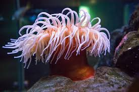

Anemones are captivating and often the centerpiece of reef aquariums. Known for their swaying tentacles and symbiotic relationship with clownfish, anemones require stable tank conditions and a bit more experience, making them suitable for intermediate to advanced hobbyists.

LOCATION
Anemones are found throughout tropical oceans, especially in the Indo-Pacific region. They attach themselves to rock or substrate and can move if unhappy with conditions.
LIGHTING
Anemones are photosynthetic and require moderate to high lighting. LEDs, T5s, or metal halides are commonly used. Proper lighting helps maintain color and support health.
Low Light: Not Recommended
Medium Light: 100–150 PAR
High Light: 150–250 PAR
WATER FLOW
Moderate to strong flow is ideal. Anemones should receive varied flow without being blasted directly. Too much direct flow may cause them to detach and wander.
FEEDING
Anemones benefit from regular feedings of meaty foods like mysis shrimp, silversides, or chopped seafood. Feeding once or twice per week encourages growth and helps maintain color.
PROPAGATION
Some anemones, such as Bubble Tips, can split naturally or be manually propagated by experienced reefers. Always use caution as improper handling can harm the animal.
A WORD OF CAUTION
Anemones can sting nearby corals and move unpredictably. Ensure they have adequate space. Their foot must be protected during acclimation and positioning. Avoid powerheads without protective covers.
ACCLIMATION
Use drip acclimation over 30–45 minutes to adjust to tank parameters. Anemones are sensitive to salinity, pH, and temperature swings, so stability is key.
 ANEMONE CARE
ANEMONE CARE